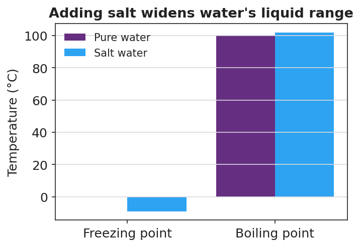

01 Phenomenon
It’s January. The night before an ice storm, a town truck salts every road. The next morning the salted streets are wet and clear while the bare sidewalk is a sheet of ice — same cold air, different outcome. In the same freezing air, a child blows a soap bubble: instead of snapping to ice like a dropped icicle, the bubble’s thin skin freezes in slow, branching crystals that creep across its surface. Both scenes point at the same idea: once you dissolve something into water, the water no longer freezes at 0 °C the way it used to.
02 Driving question
Why do we salt the roads in winter — and why doesn't a soap bubble freeze the way plain water does?
03 Notice & wonder
| I notice… | I wonder… |
|---|---|
Turn & Talk #1: The air outside is the same temperature for plain water and for salt water — yet the salt water stays liquid. In one sentence, what could the dissolved salt be doing inside the water to keep it from freezing? Try to picture the tiny particles.
04 Initial model
Before your teacher explains anything, draw and label your best guess: in a bucket of salt water, where are the salt particles and where are the water particles? Then write one sentence explaining why this mixture might stay liquid when plain water freezes.
Your drawing (label the water particles and the salt particles):
Your one-sentence explanation:
05 Investigate
You will work in a random group of three at a whiteboard (vertical surface). Predict first, then test.
Part 1 — Predict (write on your group board before touching materials)
Two ice baths are on the table: - Bath A: plain crushed ice + water - Bath B: the same ice + a big scoop of rock salt stirred in
Which bath do you predict will get colder? _______________
Why? Write your group’s reasoning.
Part 2 — Test it (thin-sliced lab)
Record each measurement as you go.
| Slice | What you did | Temperature (°C) |
|---|---|---|
| 1 | Measured Bath A (plain ice water) | |
| 2 | Stirred in salt, measured Bath B again |
How much did the temperature change after you added the salt? _______________
Make the ice cream: seal the cream mixture in the small bag, nest it in the salted-ice bag, and rock it for ~5 minutes (use a towel — it’s cold!). Did the cream freeze? _______________
Plain ice water sits at 0 °C and can’t get colder while ice is present. Could plain (unsalted) ice have frozen the cream? Why or why not?
Part 3 — Draw the mechanism (on your board, then copy here)
Draw Bath B at the particle level. Show where the dissolved salt particles are compared with the water particles. Then explain: how could those salt particles get in the way of the water freezing?
06 Make it make sense
For each everyday scenario, state the direction of the temperature change and explain why at the particle level. (No calculations — direction and cause only.)
A town spreads rock salt on an icy road before an overnight storm. The air stays below 0 °C all night.
- Does the salt make the road water freeze at a higher or lower temperature than 0 °C? _______________
- Why does the road stay liquid even though the air is freezing? _______________________________________________
- The dissolved salt particles do this by: _______________________________________________
You add salt to a pot of water on the stove to boil pasta.
- Compared with plain water, does the salt water boil at a higher or lower temperature than 100 °C? _______________
- Will the salt water boil sooner or later than plain water? _______________
- Explain why, in terms of dissolved particles: _______________________________________________
A car’s radiator is filled with an antifreeze-and-water mixture instead of plain water.
- In winter, the mixture protects the engine because its freezing point is _______________ (higher / lower).
- In summer, the mixture protects the engine because its boiling point is _______________ (higher / lower).
- What single idea explains both jobs at once? _______________________________________________
07 Key vocabulary
- freezing-point depression
- the lowering of a solution's freezing point below that of the pure solvent when a solute is dissolved in it; the more dissolved particles, the lower the freezing point (qualitatively); this is why salted roads and salted ice stay liquid below 0 °C
- boiling-point elevation
- the raising of a solution's boiling point above that of the pure solvent when a solute is dissolved in it; the more dissolved particles, the higher the boiling point (qualitatively); this is why salt water boils above 100 °C and antifreeze keeps a radiator from boiling over
- colligative property
- a physical property of a solution that depends on the *number* of dissolved solute particles present, not on their chemical identity; freezing-point depression and boiling-point elevation are both colligative properties (the name comes from a Latin word meaning "collected together," pointing to the *count* of particles)
Use each term in a sentence about today’s phenomenon or investigation. Do not just copy the definition — use the word to describe something you observed or did.
freezing-point depression: _______________________________________________ _______________________________________________
boiling-point elevation: _______________________________________________ _______________________________________________
colligative property: _______________________________________________ _______________________________________________
08 Revise your model
Return to your Initial Model drawing of salt water. Revise it:
Label the dissolved salt particles and the water particles clearly.
Add an arrow showing the freezing point moving down and the boiling point moving up.
Look at the bar chart below. Use it to check the direction of each arrow.

Then finish this Because / But / So sentence:
A town salts an icy road before an overnight storm. The road stays clear and wet because __________________________________________, but __________________________________________, so __________________________________________.
09 Exit ticket
- To make maple syrup, sap (mostly water with sugar dissolved in it) is boiled down. Will the sugary sap boil at exactly 100 °C, above 100 °C, or below 100 °C? Name the colligative property and explain in one sentence.
Boils at: _______________ Property: _______________________________
Because: _______________________________________________
- Ocean water is salt water. On a bitterly cold night the freshwater pond freezes over but the ocean nearby stays liquid. Name the colligative property at work and explain why the ocean stays liquid.
Property: _______________________________
Why: _______________________________________________
- In one sentence, identify the cause and the effect: how does dissolving particles in water change its freezing and boiling points?
10 Explore further
- Ice-cream-in-a-bag lab (the headline activity): Students seal a cream-sugar-vanilla mixture in a small zip bag, place it inside a larger bag of ice, and then add rock salt to the ice. Within ~5 minutes the salted ice bath drops well below 0 °C and freezes the cream into ice cream — something *plain* ice (stuck at 0 °C) cannot do. Pairs measure the temperature of plain-ice water vs. salted-ice water with a thermometer before eating, recording the temperature drop. This is the core evidence: adding salt to ice makes the melt-water *colder than 0 °C*, which is freezing-point depression in action.
- Antifreeze investigation (demonstration or station): Show (or describe with bottle labels) why a car's radiator uses an ethylene-glycol/water mix instead of plain water: the mixture freezes well below 0 °C (so it won't crack the engine block in winter) *and* boils above 100 °C (so it won't boil over in summer). Students read the protection chart on a real antifreeze jug and connect both directions of the shift to the bar chart in `figures/freezing_boiling_shift.png`. A digital alternative: a Javalab / PhET "solution freezing point" sandbox where students drag solute particles into water and watch the freezing temperature drop.